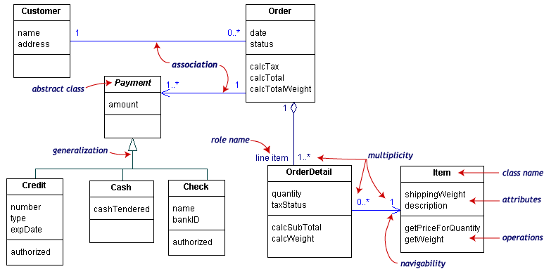
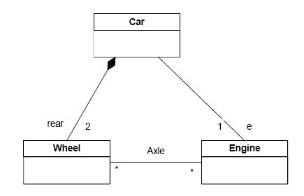
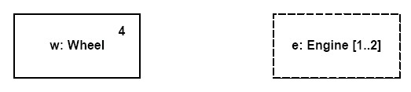
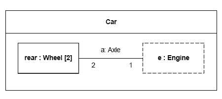
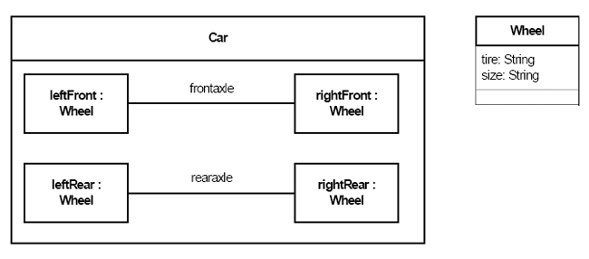
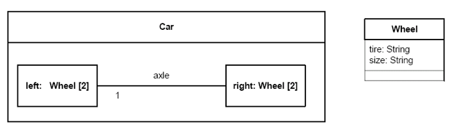
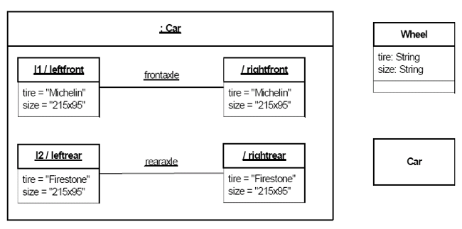
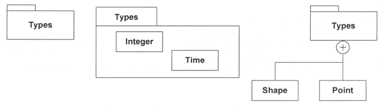
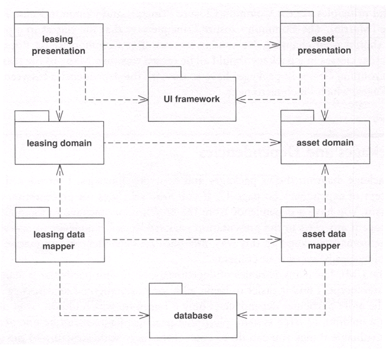
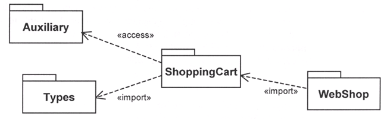

A Class diagram gives an overview of a system by showing its classes and the relationships among them. Class diagrams are static -- they display what interacts but not what happens when they do interact.
The class diagram below models a customer order from a retail catalog. The central class is the Order. Associated with it are the Customer making the purchase and the Payment. A Payment is one of three kinds: Cash, Check, or Credit. The order contains OrderDetails (line items), each with its associated Item.

UML class notation is a rectangle divided into three parts: class name, attributes, and operations. Names of abstract classes, such as Payment, are in italics. Relationships between classes are the connecting links.
In UML a feature characterizes the instances of a classifier or the classifier itself.
Attributes by Relationship

Our customer order class diagram has three kinds of relationships.
An association has two ends. An end may have a role name to clarify the nature of the association. For example, an OrderDetail is a line item of each Order.
A navigability arrow on an association shows which direction the association can be traversed or queried. An OrderDetail can be queried about its Item, but not the other way around. The arrow also lets you know who "owns" the association's implementation; in this case, OrderDetail has an Item. Associations with no navigability arrows are bi-directional.
The multiplicity of an association end is the number of possible instances of the class associated with a single instance of the other end. Multiplicities are single numbers or ranges of numbers. In our example, there can be only one Customer for each Order, but a Customer can have any number of Orders.
This table gives the most common multiplicities.
| Multiplicities | Meaning |
|---|---|
| 0..1 | zero or one instance. The notation n . . m indicates n to m instances. |
| 0..* or * | no limit on the number of instances (including none). |
| 1 | exactly one instance |
| 1..* | at least one instance |
Every class diagram has classes, associations, and multiplicities. Navigability and roles are optional items placed in a diagram to provide clarity.
Each of UML relationships represents a different type of connection between classes and has subtleties that aren't fully captured in the UML specification. Be sure that your intended viewers understand what you are conveying with your various relationships.
Dependency
("uses a"
relationship)
The weakest relationship between classes. It means that one class uses,
or has knowledge of another class. It is typically a transient relationship.
Dependencies are typically read as "...uses a...". E.g.,
Window uses a WindowClosingEvent.
Association ("has
a" relationship)
Associations are stronger then dependencies and typically indicate that one
class retains a relationship to another class over an extended period of
time. Usually each one can be destroyed without necessarily destroying each
other. E.g., Window has a Cursor.
Aggregation ("owns
a" relationship)
In an aggregation
relationship, the part may be independent of the whole but the whole
requires the part (containment). E.g., Window owns a Rectangle.
An aggregation relationship is indicated in the UML with
an unfilled diamond. It can be considered as a shareable aggregation
that denotes a weak ownership. That is, the part may be included in several
aggregate "owner" classes.
Composition ("is
part of" relationship)
A composition
relationship, also known as a composite aggregation, is a stronger
form of aggregation where the part is created and destroyed with the whole.
E.g., Titlebar is part of Window. A composition relationship is indicated in the UML with a filled diamond.
The no sharing rule is the key to composition.
Generalization
("is a"
relationship)
A generalization relationship conveys that the target of the relationship is a
general, or less specific, version of the source class or interface.
E.g.,
Cat is an
Animal.
Notice that with both types of aggregation, the diamond is located on the side of the line pointing to the aggregate class which represents the "whole" in an aggregation (whole-part) relationship.
The following is a handy short-cut guide:
| Dependency |
Association
|
Aggregation
|
Composition |
Generalization
|
| "...uses a..." |
"...has
a..."
|
"...owns
a..."
|
"...is part of..." |
"...is
a..."
|
Object diagrams show instances instead of classes. They are useful for explaining small pieces with complicated relationships, especially recursive relationships.
This small class diagram shows that a university Department can contain lots of other Departments.
The object diagram below instantiates the class diagram, replacing it by a concrete example.

Each rectangle in the object diagram corresponds to a single instance. Instance names are underlined in UML diagrams. Class or instance names may be omitted from object diagrams as long as the diagram meaning is still clear.
A composite structure diagram depicts the internal structure of a classifier in terms of parts.
Part
An element representing a
set of instances by composition that
are owned by a containing classifier instance or role of a classifier. All such instances are destroyed when the containing
classifier is destroyed. Parts may be joined by attached connectors and
specify configurations of linked instances to be created within an
instance of the containing classifier.
A property specifying an instance not owned by composition by the instance of the containing classifier is shown by a graphical nesting of a box symbol with a dashed outline.

Property examples
The namestring of a part obeys the following syntax:
<name>‘:’<classifiername> [multiplicity]

Properties in a structure diagram



The namestring of a role in an instance specification obeys the following
syntax:
{<name> [‘/’ <rolename>] | ‘/’ <rolename>} [‘:’ <classifiername>
[‘,’ <classifiername>]*]
The name of the instance specification may be followed by the name of the
part that the instance plays. The name of the part may only be present if
the instance plays a role.

Examples of packages with members

To simplify complex class diagrams, you can group classes into packages. A package is a collection of logically related UML elements. The diagram below is a business model in which the classes are grouped into packages.

Packages appear as rectangles with small tabs at the top. The package name is on the tab or inside the rectangle. The dotted arrows are dependencies. One package depends on another if changes in the other could possibly force changes in the first.
How do you chose which classes to put in which package?


"for" and press Ctrl+Space to activate Content Assist